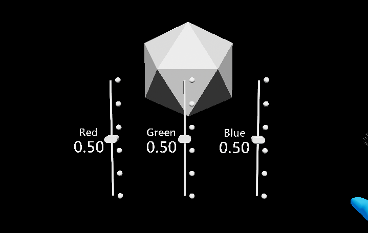

Pinch slider

Sliders are UI components that allow you to continuously change a value by moving a slider on a track. Currently the Pinch Slider can be moved by directly grabbing the slider, either directly or at a distance.
Example scene
You can find examples in the SliderExample map in the UX Tools Examples plugin.
How to use sliders
You can simply add a UxtPinchSliderActor to your level. This will give you a HoloLens 2 style slider ready to use. To react to changes to the slider value subscribe to the OnValueUpdated event in the actor:

If the default slider actor doesn't suit your needs, you can create your own slider from scratch following these steps:
Create a new actor blueprint with a
UxtPinchSliderComponentas the root component of the actor.Add a Sphere static mesh to the actor and call it Thumb. Set its scale to 0.025.
Select the UxtPinchSliderComponent and set the Visuals property to reference the sphere mesh.
Add a Cylinder static mesh to the actor and call it Track. Set its scale to (0.01, 0.01, 0.5) and its X rotation to 90 degrees.
If the slider is configured correctly it will look like this:

Events
UxtPinchSliderActor has just one event, covering the most common use case:
- OnValueUpdated: raised when the slider value changes.
UxtPinchSliderComponent has a number of events that can be used to respond to slider input:
- OnUpdateState: raised when the slider changes state.
- OnBeginFocus: raised when a pointer starts focusing the slider.
- OnUpdateFocus: raised when a focusing pointer updates.
- OnEndFocus: raised when a pointer stops focusing the slider.
- OnBeginGrab: raised when the slider is grabbed.
- OnUpdateValue: raised when the slider's value changes.
- OnEndGrab: raised when the slider is released.
- OnEnable: raised when the slider is enabled.
- OnDisable: raised when the slider is disabled.